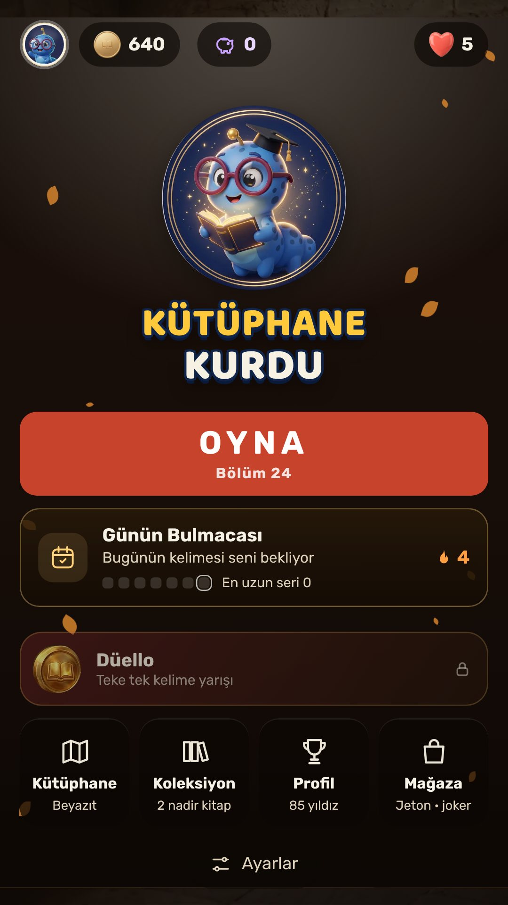
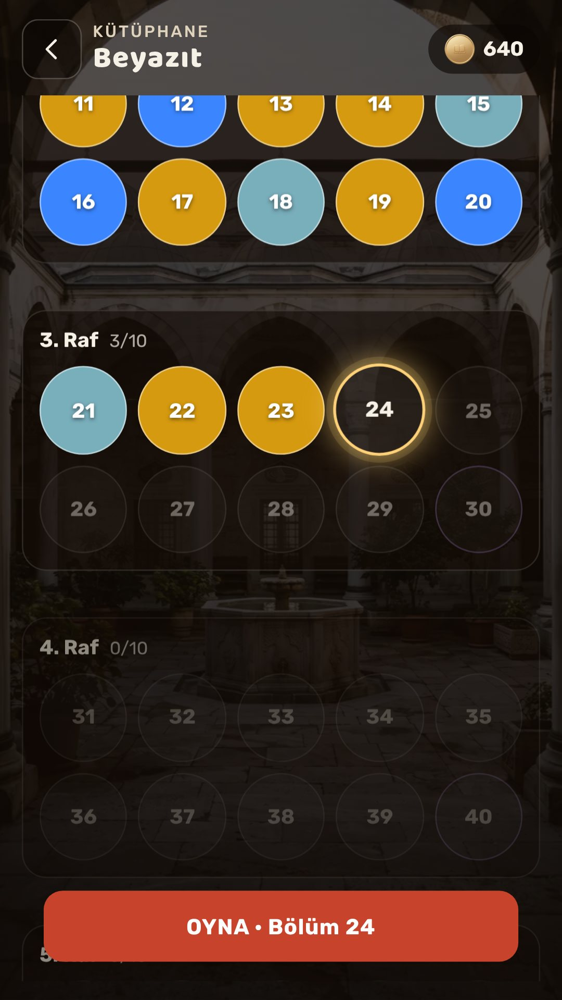
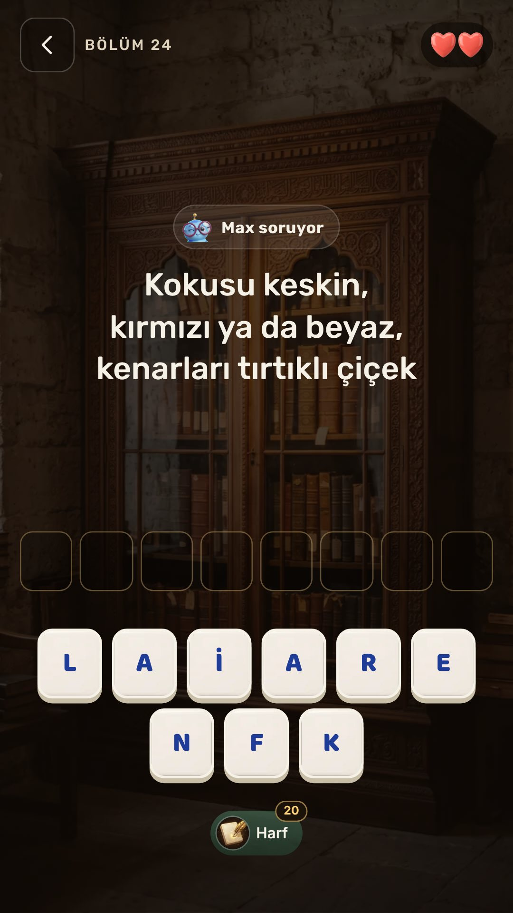
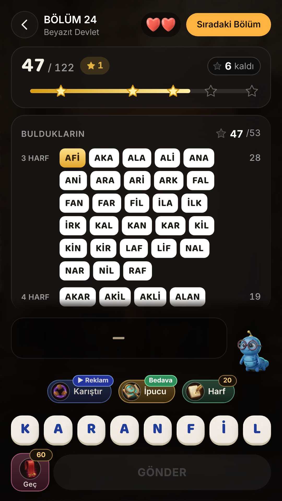
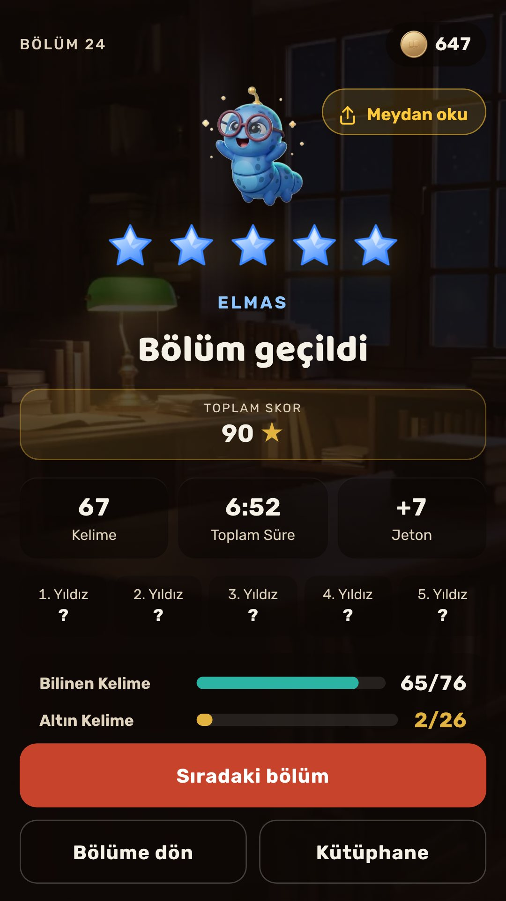
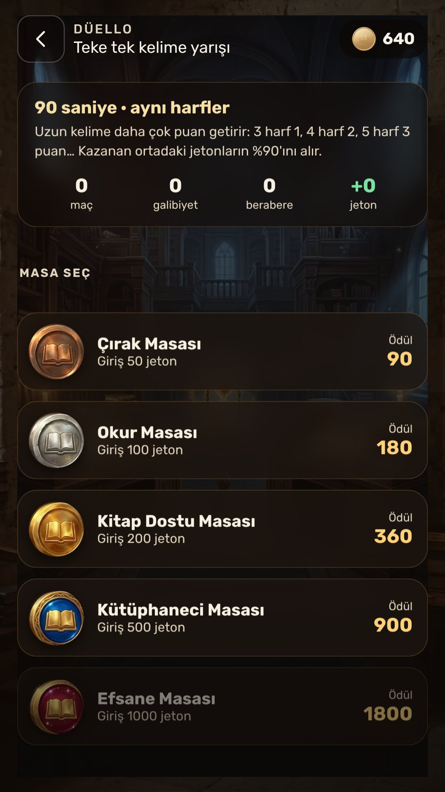
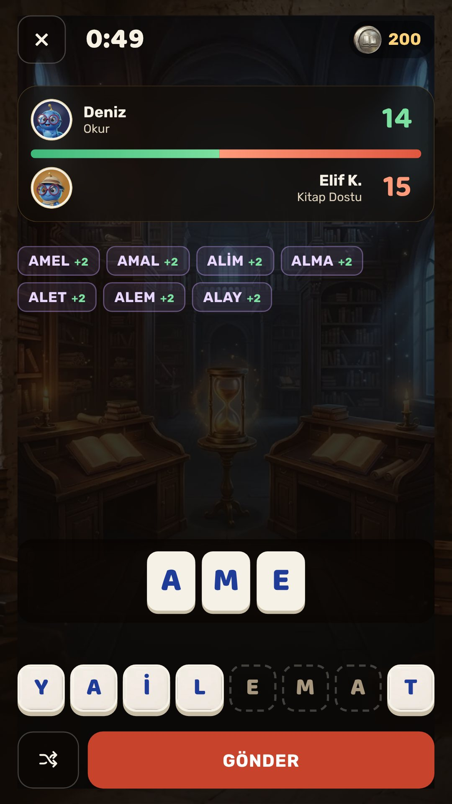
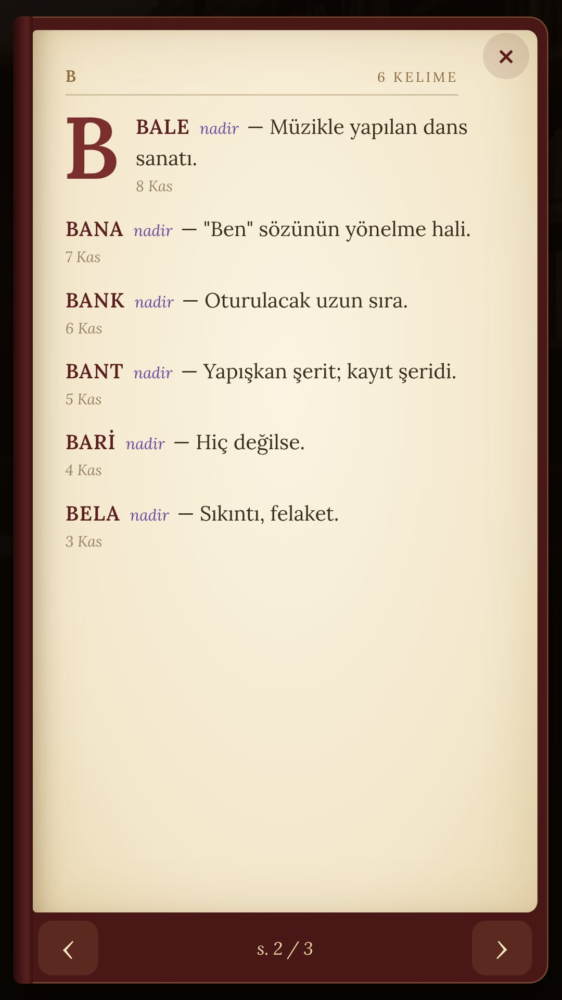

Basın kiti · GaMedia
Basın kiti
Bu sayfadaki metinleri ve görselleri Kütüphane Kurdu hakkında haber, inceleme ya da tanıtım yazarken izin almadan kullanabilirsiniz. Görsele tıklayınca tam boyutu açılır.

Kısa bilgi
| Oyunun adı | Kütüphane Kurdu: Kelime Oyunu |
| Tür | Türkçe kelime ve bilgi oyunu |
| Geliştirici | GaMedia · Çağrı Sarıer, İstanbul |
| Platform | Android (Google Play) |
| Çıkış | Kasım 2026 |
| Fiyat | Ücretsiz; reklam ve isteğe bağlı uygulama içi satın alma içerir |
| Dil | Türkçe |
| İçerik | 300 bölüm, üç kütüphane, bekçi düelloları, günlük bulmaca, 90 saniyelik düellolar |
Tek cümlede
Kitap kurdu Max ile İstanbul'un köklü kütüphanelerini gezdiğin, her bölümü bir soruyla açılan Türkçe kelime oyunu.
Kısa tanıtım (yaklaşık 50 kelime)
Kütüphane Kurdu'nda her bölüm bir soruyla açılır. Cevabın harfleri karışık düşer; oyuncu cevabı kurar, sonra o harflerden yeni kelimeler türetir. Kitap kurdu Max ile Beyazıt Devlet Kütüphanesi, Rami Kütüphanesi ve Atatürk Kitaplığı'nı gezen oyuncu, bulduğu her kelimenin anlamını kendi sözlüğüne ekler.
Uzun tanıtım
Kütüphane Kurdu, GaMedia'nın geliştirdiği ücretsiz bir Türkçe kelime oyunudur. Oyunun kahramanı Max, kitapları okumaktan çok tadına bakmayı seven mavi bir kitap kurdu. Oyuncu Max'e İstanbul'un köklü kütüphanelerinde yol gösterir.
Her bölüm tanım, eş anlamlı, bilmece ya da doğru-yanlış türünde bir soruyla başlar. Cevap bulununca harfleri oyuncunun klavyesine gelir ve o harflerden türeyebilen kelimeler aranır. Bulunan her kelime kısa anlamıyla birlikte oyuncunun sözlüğüne yazılır; böylece oyun az duyulmuş, eski ya da unutulmaya yüz tutmuş kelimeleri de öğretir.
Her kütüphane 100 bölümden oluşur ve sonunda o kütüphanenin bekçisiyle iki dakikalık bir kelime düellosu vardır: Beyazıt'ta Mum Bekçi, Rami'de beyaz kedi Mochalina, Atatürk Kitaplığı'nda Bayan Daktilo. Bekçiyi yenen oyuncu o kütüphanenin Altın Kitabı'nı kazanır. Her rafta kütüphaneye dair gerçek bir bilgiyi anlatan Nadir Kitap kartları, günlük bulmaca ve diğer oyunculara karşı 90 saniyelik düellolar da oyunun parçası. Oyun internetsiz de oynanabilir; yeni kütüphaneler güncellemelerle eklenecek.
Öne çıkanlar
- 300 bölüm, üç gerçek İstanbul kütüphanesi
- Her bölüm bir soruyla açılır; cevaptan yeni kelimeler türetilir
- Bulunan her kelimenin anlamı oyuncunun kendi sözlüğüne yazılır
- Her kütüphanenin sonunda bekçi düellosu ve Altın Kitap
- Yıldız topladıkça yükselen 11 rütbe ve her rütbeye özel Max avatarı
- İnternetsiz oynanabilir
Logo ve karakter


Ekran görüntüleri


Ana menü

Kütüphane haritası

Bölüm sorusu

Kelime türetme

Bölüm sonucu

Düello masaları

Düello maçı

Oyuncunun sözlüğüİletişim
Röportaj, inceleme kodu ya da ek görsel için: kutuphanekurdu.oyun@gmail.com